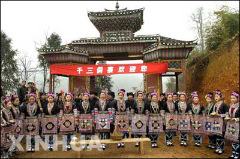

贵州省黎平县茅贡乡地扪村侗族人文生态博物馆开馆，它是中国第一家民办生态博物馆。
侗族来源于秦汉时期的“骆越”。魏晋以后，这些部落被泛称为“僚”，侗族即“僚”的一部分。现主要分布在贵州省的黎平、从江、榕江、天柱、锦屏，湖南的新晃、靖县、通道和广西的三江、龙胜等县。人口251万（1990年第4次人口普查）。信仰多神，崇拜自然物。
侗族有自已的语言，侗族属汉藏语系壮侗语族侗水语支。侗族人多通汉语。原无文字，1958年设计了以拉丁字母形式的拼音文字。侗族还有自已的民间戏曲——侗戏。它是由叙事说唱发展起来的。侗族民歌尤以比喻见长。箫笛是他们的乐器。侗族还以建筑艺术见长。每个寨子都有造型别致的木楼。这种不用一钉一铆的木结构建筑吸收了中国古代亭台、楼阁建筑的部分精髓。
侗族主要从事农业，兼营林木。以生产鱼粳稻为主，善用稻田养鱼。林业以产杉木著称。
1951年8月19日，广西龙胜侗族与苗、壮、瑶等民族建立了龙胜各族自治县。后又建立了广西三江侗族自治县（1952年12月3 日）、湖南通道侗族自治县（1954年5月7日）、黔东南苗族侗族自治州（1956年7月23日）、湖南新晃侗族自治县（1956年12月5日）、贵州玉屏侗族自治县（1984年11月7日）。
日常食俗 大部分地区日食三餐，也有部分地方有日食四餐之习，即两茶两饭。两茶是指侗族民间特有的油茶。油茶是用茶叶、花、炒花生（或酥黄豆）、糯米饭，加肉或猪下水、盐、葱花等为原料（有的地方还加菠菜竹蒿），制成的汤状稀食，既能解渴，又能充饥，故常称“吃油茶”。四餐之中中间两餐为正餐，以米饭为主食，一般在平坝地区的侗族吃鱼米饭，山区的侗族鲎食糯米。糯米性粘，多用来做成粽子、糍粑、糯米饭团。既能抗饿，又便于携带，而且不易变馊，倍受侗族喜爱。侗族地区的糯米很多，有红糯、黑糯、白糯、长须糯、秃壳糯、旱地糯和香米糯等7、8种，其中香米糯有糯米王之称，有“一家蒸饭，全寨飘香”之誉。侗族日常蔬菜十分丰富，除鲜食南瓜、苦瓜、韭菜外，大部分腌成酸菜。如：酸黄瓜、酸罗卜、酸刀豆、酸蕨菜等。侗族日常菜肴以酸味为主。不仅有酸汤，还有用酸汤做成的各种酸菜、酸肉、酸鱼、酸鸡、酸鸭等。相传腌酸菜始于宋代，历史上有“南人以老鱼为鮓，有十年不坏者”的记载。制作酸菜有坛制和筒制两种，坛制是指将淘米水装入坛内，置于火塘边加温，使其发酵，制成酸汤，然后用酸汤煮鱼虾、蔬菜，做为日常最常见的菜肴。民间经常食用的虾酱也多以坛制作。制作虾酱时，先将生虾与辣椒面拌合，捣碎，再加粥、豆粉、牛姜末、桂皮和盐，搅匀入坛，发酵后即可食用。食用时再以油煎炒，其味鲜酸酥辣，最能开胃佐饭。腌鱼、腌猪排、牛排及腌鸡鸭则以筒制为主。筒有木桶和楠竹筒两种。腌鱼腌渍时间越长，其味越醇。制作腌鱼以入冬最佳，其时草鱼入冬寒后，处于半休眠状，不再吃食，腹内粪便较少，肌厚肉紧，最适合腌制酸鱼。鱼虾除大量酸食外，亦常鲜食。特别是在每年放塘时，鱼虾较多，常用草鱼做鱼羹（侗语更坝）。制作鱼羹时，去鱼内脏，用茶油煎炒，然后对入适量的清水煮沸，加糯米粉，熬成粥状时，加盐，即可食用。置办酒宴时，以鲜炒鲤鱼、鲫鱼为贵。侗族地区还有以稻田养鱼之习，每年栽秧后，便把鱼苗放入稻由，秋收季节稻谷金黄，鱼苗已长成大鱼，届时一面收稻，一面捕；并当即在田边烧起篝火，将捉到的鱼部洗去鳞，用树枝或竹棍穿起，放在炭火上炙烤，直到色黄飘香，用手撕着鱼片，蘸盐和辣椒食用，不仅鲜香可口，而且别具情趣。侗族成年男子，普遍喜爱饮酒，所饮酒类大都是自家酿制的米酒，度数不高，淡而醇香。
节庆、礼仪食俗 侗族传统节日各地日期不一，节日饮食常和宴客活动联系在一起。特别是生诞婚丧之日，都要进行不同规模的宴客活动。在广西三江地区的侗族民间，婚后妇女头胎儿女诞生，都有以“三朝酒”祝贺之习。“三朝”指三天，即在小孩生卜后十天内，选其中二个单数日子，如：五、七、九（有的地方生男选单日，生女选双日），进行祝贺。祝贺时要置办酒席，特别是要将小孩外祖父母家族的人邀来越宴，筵席上除备有各种鱼、肉、菜外，还要备有大量的熟鸡蛋和甜酒。敬酒时，主客双方互持杯交手腕而饮，谓之喝“交杯酒”。若双方性别不同，男方先饮，若年龄不同，长者先饮。主客之间，以客为尊。酒后大家才一起吃油茶。孩子周岁时，还要喝对周茶（有的吃吃周岁酒）；此外，新房盖成或其他公共事务办成都要置酒进行庆贺。亲朋好友之间往来都举行婚礼时，新娘只要踏入夫家，第一件事就是打油茶（即制作油茶），名为“新娘茶”。节庆活动中吃油茶比较讲究，家里专门备有吃油茶的小碗，并事先切好姜、辣椒等佐料，供客人自选。家里来了贵客，通常要拿出最好的苦酒和腌制多年的酸鱼、酸肉及各种酸菜进行款待，因而有“苦酒酸茶”待贵客之说。侗族民间用鸡、鸭待客时，首先主人要把鸡头、鸭头或鸡爪、鸭蹼敬给客人。客人应双手接过，或转敬给席上的长者，以表示主客之间互相尊重，以诚相待。到侗族家里做客，食用腌鱼时，主人将一堆酸鱼块放入客人碗中，但客人最好不要吃光，留1、2块，以表示“有吃有余”。
典型食品主要有：油茶、腌酸鱼、腌菜等。
乐器 木质的有琵琶、牛腿琴、胡琴等；竹制的有箫、笛、芦笙等。侗族的箫与笛是中国传统的乐器之一。玉屏箫共有18个品种，23个规格，各有名称指代。玉屏箫、笛于1896年参加了伦敦赛会，1913年参加了巴拿马赛会，先后获得了金质和银质奖章。芦笙有大有小，有长有短，吹出的声调音量各有不同。
侗族鼓楼 侗族，有南、北部两种方言。南部方言的侗族，最喜爱在寨中修建鼓楼。即木楼上放有一面“桦皮鼓”或“牛皮鼓”。鼓楼是侗寨的重要标志和侗家人议事的场所。